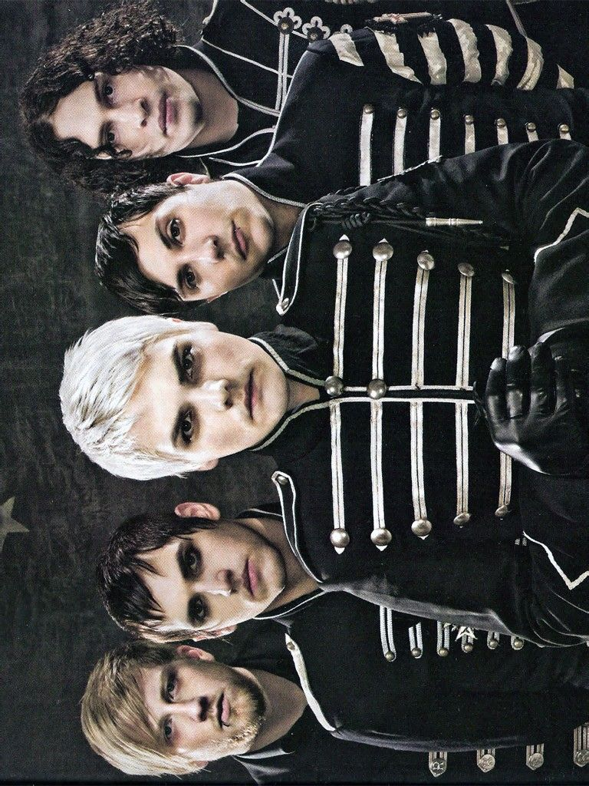

Después de varios años sin giras de gran escala y tras una larga espera de los fans, My Chemical Romance vuelve a los escenarios con una propuesta que toca directo la nostalgia: el tour “Long Live The Black Parade”. Inspirado en su icónica era de The Black Parade (2006), este recorrido mundial marca un regreso potente, recorriendo múltiples continentes y reuniendo a distintas generaciones que crecieron con su música. A continuación, se presentan las fechas organizadas por región para seguir de cerca este esperado regreso.